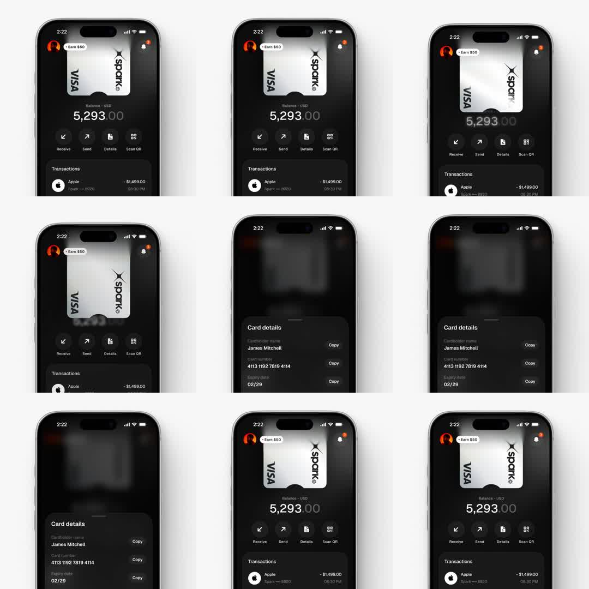

Media
Frame-by-frame

0-25%
Home: avatar + 'Earn $50' chip, silver Spark Visa card art (metallic gradient, subtle noise), balance 5,293.00 in tabular figures with .00 de-emphasized, 4 action buttons (Receive/Send/Details/Scan QR), Transactions list.
25-45%
Details tapped: background blurs heavily (20px+) and dims; dark sheet slides up from bottom over it: 'Card details' title, rows with Copy buttons.
45-70%
Sheet settles ~55% height; rows readable: James Mitchell / 4113 1192 7819 4114 / 02-29; backdrop blur holds.
70-100%
Sheet slides back down; blur and dim release in sync; home restores crisp.